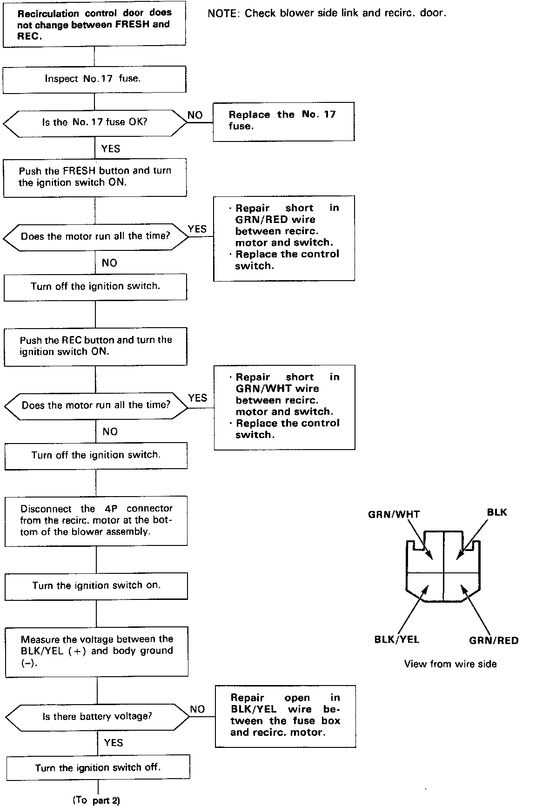
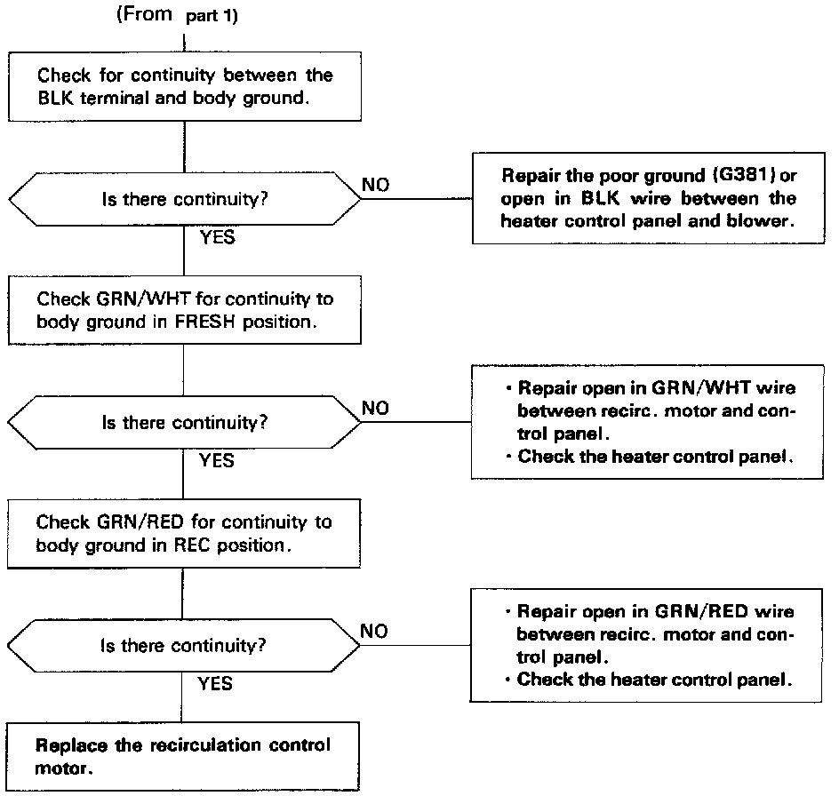

Operation CHARM
: Car repair manuals for everyone.
Home
>>
Acura
>>
1991
>>
Integra L4-1834cc 1.8L DOHC FI
>>
Repair and Diagnosis
>>
Heating and Air Conditioning
>>
Control Assembly
>>
Testing and Inspection
>>
Lever Type Controls - Manual A/C
>>
Recirculation Control
Recirculation Control
Recirculation Control

